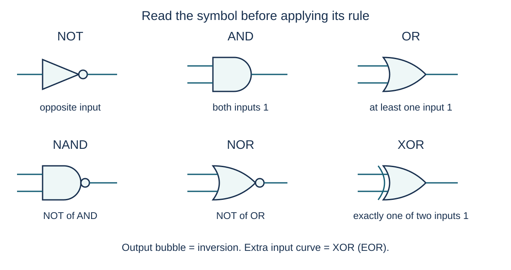

Recognise six gate symbols and apply their functions
S3.10.A01S3.10.A02S3.10.A03S3.10.A04S3.10.A05S3.10.A06
Visual overview
Six symbols with exact input and output connections

Visual transcript
- Compare the output circles on NOT, NAND and NOR, and the extra curved line on XOR.
Read the input and output connections
A logic gate maps binary input values to a binary output. In these examples 1 represents TRUE/high and 0 FALSE/low; each scenario must say what those values mean for its inputs. NOT has one input. The other five named gates each have two inputs, even when a whole circuit has three or more independent variables.
Build the basic rules before their variants
- NOT: Invert one input: 0 becomes 1 and 1 becomes 0. Its triangular symbol has an output inversion circle.
- AND: The output is 1 only for 11. For 01, one required condition is missing, so the output is 0.
- OR: The output is 1 when either or both inputs are 1. The 11 case is included.
- NAND and NOR: Evaluate AND or OR first, then invert the whole result at the output bubble. Inverting one input is a different circuit.
- XOR / EOR: Exactly one of the two inputs must be 1. The output is 1 for 01 and 10, and 0 for 00 and 11. The extra curved input line distinguishes its symbol from OR.
Use a decisive row to distinguish rules
| Question | Evaluate this input | Conclusion |
|---|---|---|
| OR or XOR? | A = 1, B = 1 | OR = 1, XOR = 0. An example with 10 cannot distinguish them. |
| NAND or AND with B inverted? | A = 0, B = 0 | NAND = 1; A AND NOT B = 0. Moving the inversion changes the function. |
| NOR or OR? | A = 0, B = 0 | NOR = 1 while OR = 0. The bubble complements the whole result. |
Keep notation and meaning aligned
Use AND, OR and NOT words with brackets in the following expressions. Other texts may use a dot for AND, a plus for OR, an overbar or ¬ for NOT, and ⊕ for XOR. A logical plus is not ordinary binary addition. The equality sign in Q = A AND B describes a Boolean relationship, not a pseudocode assignment statement.
Core explanation · Exam essentials
- Recognise NOT, AND, OR, NAND, NOR and XOR by their shapes and output rules.
- Output circles invert; XOR’s extra input curve does not denote inversion.